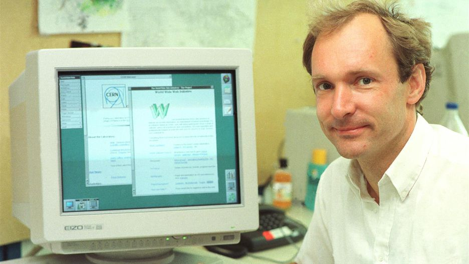

The World Wide Web project was first proposed in 1989 by Tim Berners-Lee during his time as a software engineer in CERN.
His proposal document was initially titled “Information Management: A Proposal”.
The document contains the main fundamentals of the web that the we are still using, which is the HTML, HTTP, and URI.
The first web page was created and hosted on the NeXT computer in the year 1990
By 1993, World Wide Web can be used by anyone.
On the year 1994, Berners-Lee went to Massachusetts Institute of Technology and found World Wide Web Consortium, also known as W3C.
<<<<<<< HEAD
1962 - a scientist from ARPA and MIT named J.C.R licklider proposed the galactic network of computers that would allow people of different locatios to communicate
1965 - another MIT scientist developed a way of sending information from one information to another. He called it "packet switching"
1969 - by the end of this year, only 4 computers were connected to the ARPANET.
1970 - by the end of this year, a computer scientist named Vinton Cerf solved the problem of packet switching by inventing the Transfer Control Protocol (TCP) and later he added the Internet Protocol (IP)
1980s - Cerf's protocol transformed the internet into a worlwide network.
1991 - The internet chaged again. A Switzerland computer programmer named Tim-Berners Lee introduced the World Wide Web.
=======
>>>>>>> b93b091e35c8f4dfaf6c8cefce898be6c826b1de